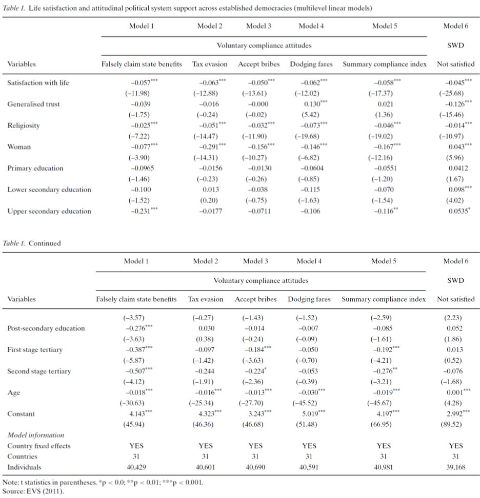
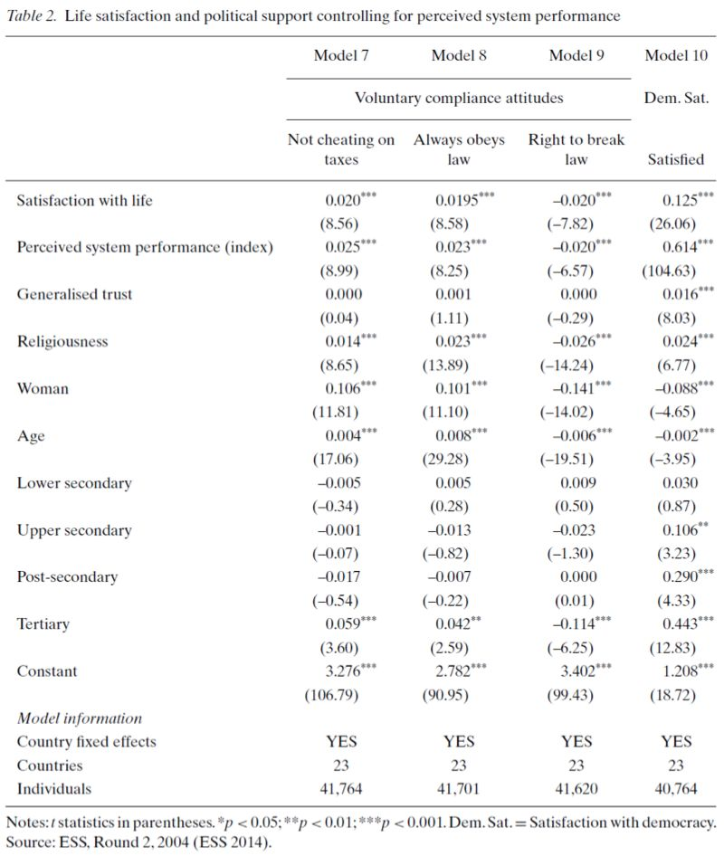
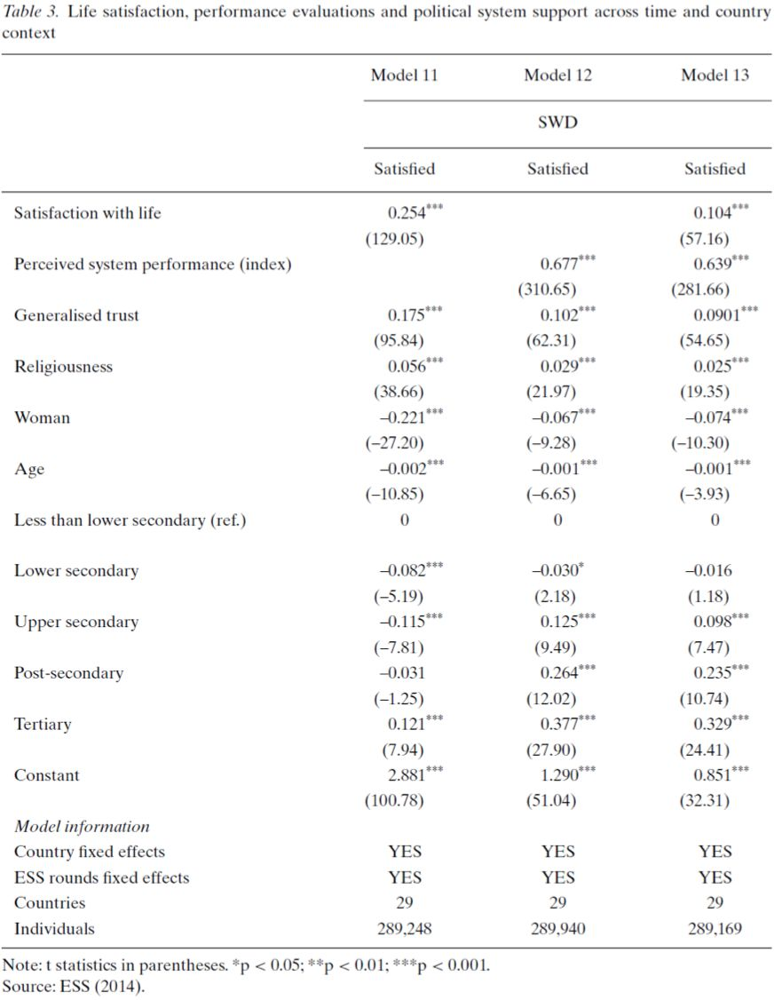
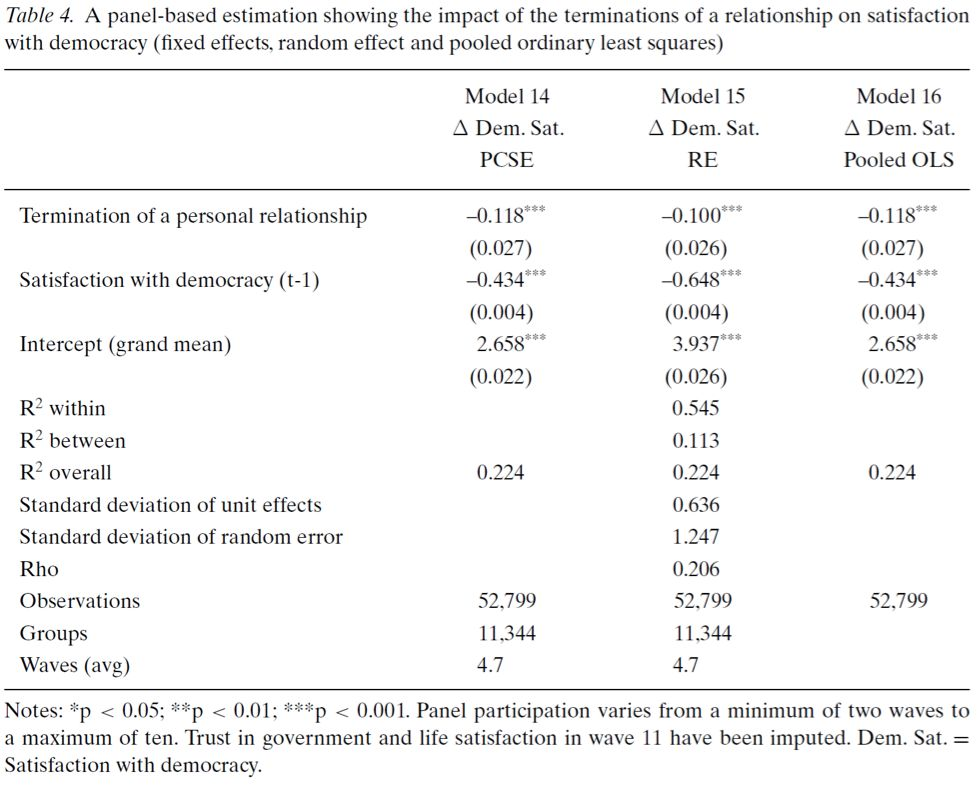
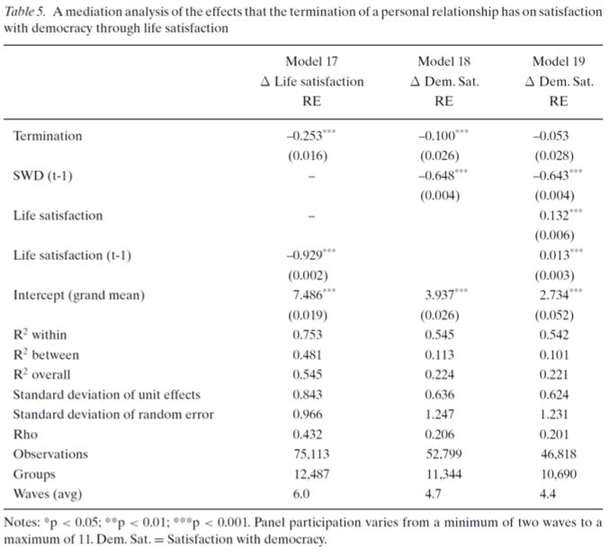
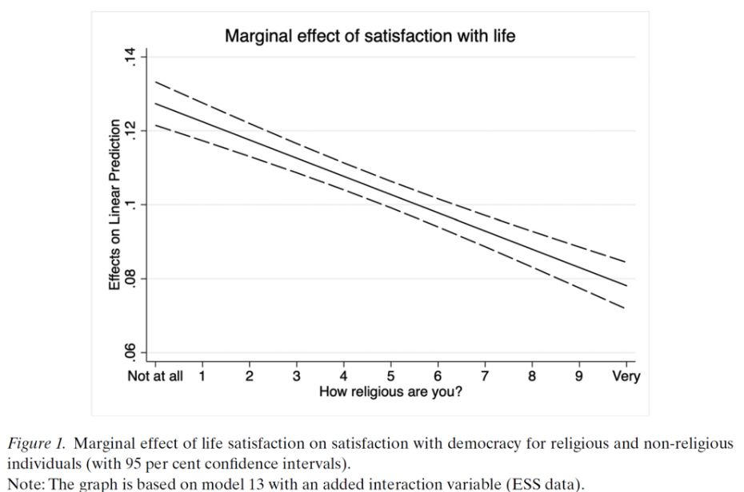

收录于合集
#政治态度 13 个
#比较政治学 121 个
文献来源： Peter Esaiasson, Stefan Dahlberg and Andrej Kokkonen, “In pursuit of happiness: Life satisfaction drives political support.” European Journal of Political Research , 59(2020), pp.25-44.
作者简介： Peter Esaiasson，瑞典哥德堡大学政治学系教授；Stefan Dahlberg，瑞典哥德堡大学政治学系高级讲师；Andrej Kokkonen，瑞典哥德堡大学政治学系博士后研究员。
引言
政府的政策能否让人们更加幸福，这是专家评估政治制度的一项标准。政治制度能够影响人们的幸福感水平。主观幸福感（Subjected well-being, SWB）和政治支持存在因果关系，过往的研究将主观幸福感作为解释变量，控制变量，以及调节变量。但是既有研究忽略了主观幸福感的重要性，而本文的核心观点就是公民的主观幸福感可以作为他们的政治支持以及遵守政府法令的解释变量。
这样的因果关系在作者看来就好像是民众与政府签订了一份“幸福契约”，这种“幸福契约”模型要求政府提供某种条件使得民众能够达到一定的幸福感水平，反过来民众会支持政府以及遵守政府制定的法令。如果政府无法做到，那么作为惩罚，民众将会收回他们的支持。这一模型的优势在于，它并不要求严格的信息，也就是说，即使民众对政府的责任没有清晰的认知，也不影响“幸福契约”的产生效用。
为此，作者进行实证检验。他们使用来自欧洲价值观调查（European Value Survey，EVS）、欧洲社会调查（European Social Survey，ESS）和瑞士家庭面板数据库的数据，利用最小二乘法线性回归模型和多层线性回归模型，通过四项研究，分别验证了SWB作为解释变量的可行性、消极外生事件对政治支持的削弱和潜在的因果机制。
模型与概念操作化
“幸福契约”模型是一种建立在互惠基础上的模式，个体建立在自己的主观幸福感之上而确立的对政治制度的支持和对政府法令的遵从。尽管人们对制度的评价受到来自信息的影响，特别是不完全信息而造成的消极误解，但是这一模型不要求这种信息的完备性，认为人们对制度的评价仅仅根据自己的主观体验来决定，而这一观点选举投票研究中得到了证实。主观幸福感以两种不同方式影响政治支持。作为主观幸福感的静态效应，不同的性格对政府的支持水平不同，性格开朗的人对当局更加支持。而作为主观幸福感的动态效应，个体经历会通过影响个人主观幸福感进一步影响对政治制度的支持，这也被视作主观幸福感的情境效应。
对于政治支持，文章认为可以通过对政府法令的支持来衡量，进一步地可以通过对非法行为（例如逃税、逃票等）的态度来衡量，以及对民主的满意程度（Satisfaction with Democracy，SWD）来综合反映。
研究一：主观幸福感（SWB）是政治支持的稳健预测变量吗？
文章的第一个研究建立了个体的SWB和政治支持的因果关系，在欧洲民主国家的环境中，控制个人层面的因素（年龄、教育和性别）之后，SWB确实对政治支持存在影响。此研究使用了EVS2008的数据，包含近36000个样本，采用固定效应模型来控制国家间的差异，以考察个人不同SWB对个人政治支持的影响。固定效应的多层线性模型显示，SWB得分高的人，更反对那些非法行为，对国家的民主制度更为支持，这一结果显示了SWB和政治支持之间存在的强正相关关系。

研究二：SWB的影响是否独立于绩效
研究一证明了SWB是预测公民政治支持的良好解释变量，进一步地，作者使用ESS数据，将另外一套影响政治支持的变量（包括对经济绩效、医疗系统和教育系统绩效的感知）加入模型中。在此研究中，SWB使用生活满意度指标来衡量。首先，作者使用第二波（ESS2004）数据，将绩效感知变量加入固定效应多层线性模型中，结果显示，SWB依然对政治支持有着显著影响，SWB水平越高的人，更倾向于遵守法律法规，抵制非法行为，他们的民主满意度（SWD）也会更高。

接着，作者使用七波ESS数据（2002-2014）近28800个样本来验证研究的可靠性。结果显示，SWB对SWD依然有着显著影响。将绩效感知变量加入模型之后，SWB的协方差系数虽然下降，表明二者的效应存在一定的重叠，但是SWB的影响依然是显著的。

研究三：外生事件会通过SWB来影响政治支持吗？
前两个研究探索了SWB的静态效应，研究三检验SWB的动态效应，也即那些能够影响生活的个人经历通过对个人主观幸福感的影响来间接影响政治支持。这些经历与政治机构密切相关，但是问题在于个人经历与政府绩效感知存在内生性，故无法建立因果关系。为了解决这一问题，作者使用个体人际关系变化来衡量个人经历。作者认为，类似亲属过世等人际关系变动在福利国家可能与政府政策有密切关系（比如医疗体系等），从而使用这一变量来避免可能存在的内生性问题。
作者使用瑞士家庭面板数据库（SHP），将亲密关系的终止纳入模型，同时加入生活满意度指标，利用面板校正标准误（PCSE）、随机效应（RE）和简单合并普通最小二乘法（pooled OLS）三种估计手段来验证这一效应。结果显示，三种估计方法均显示亲密关系的终止对政治支持有负面影响。

接着，作者进行了两个随机效应回归来验证生活满意度的调节效应。结果显示，在控制t-1时刻生活满意度的情况下（模型18）个人关系的终止对t时刻的生活满意度有显著影响。引入生活满意度变化后，关系终止对政治支持的影响消失，证明生活满意度的调节效应存在。

研究四：因果机制是什么？
个人的政治支持基于主观幸福感，这种情感处理机制背后是个体精神力量的影响。作者认为，精神力量强的个体更能使自己适应不幸。也就是说，有虔诚宗教信仰的人们，SWB影响政治支持的效应比那些没有的人要更弱。为此，作者在模型中增加了SWB和宗教的交互项。其边际效应验证了作者的上述观点。

结论
本研究扩大了政治支持影响因素的范围，提出政治支持可能并不完全取决于政治制度的好坏，但是好的政治制度的确能够促进民众幸福水平的提升，反过来一个国家的民众更加幸福，那么该国的民主制度将更为稳定。
编译：刘天祥 审校：杨端程 编辑：郭静远
【政文观止Poliview】系头条号签约作者